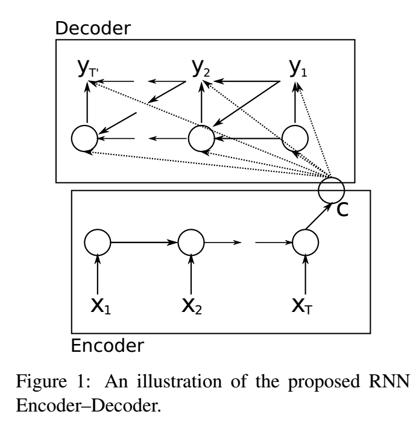
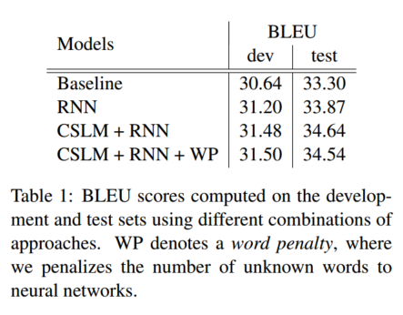

论文地址：https://arxiv.org/abs/1406.1078
这篇文章提出了RNN Encoder-Decoder架构，使得RNN能够处理序列数据的输入输出：先把序列数据encode成一个定长vector，再把它decode成另一个序列。有趣的一点是，这篇文章的题目里带了“SMT”这个词，说明它并不是一种纯NMT的方法——事实上论文里用它替代了现存的方法里给短语打分的部分。当然这种方法也是可以直接用于整句翻译的（On the Properties of Neural Machine Translation: Encoder-Decoder Approaches），但由于RNN的特性，使得在长句上表现不太好，最后又改进出了Attention方法。目前我还不知道这篇文章和Seq2Seq具体是什么关系。
2018.10.11 UPDATE：Seq2Seq和这篇文章提出的架构很类似，但是提高了长句翻译的表现（通过把句子倒过来的trick），一般说Seq2Seq架构的时候应该指的是那篇文章（至少我认为是这样）。本文的另一个重要贡献是LSTM的简化版，GRU单元。
简介
本文中提出了一种新的模型，称为RNN Encoder-Decoder，包括两个RNN。一个RNN（encoder）把符号序列编码成一个定长向量表示（fixed-length vector representation）；另一个RNN（decoder）把该表示解码成另一个符号序列。这两个RNN共同被训练，以最大化输出目标序列的概率。我们同时提出了一种新的隐藏层单元（hidden unit）。将该模型计算出的短语对条件概率作为现有SMT模型的额外特征之后，SMT的翻译结果提升了；且可以发现，该模型学到的短语中间表示在语义上和句法上都是有意义的。
RNN
RNN是一个神经网络，它输入变长序列x=(x1,...,xT)，内部有一个隐状态h，输出（可选）为y。在每个时刻t，RNN的隐状态h⟨t⟩会被更新：
h_⟨t⟩=f(h_⟨t−1⟩,xt)
其中f是一个非线性激活函数，可能很简单，也可能很复杂（如LSTM）。
RNN可以通过被训练为预测序列中的下一个符号来学习序列的概率分布。在这种情况下，t时刻输出的就是概率分布p(xt∣xt−1,...,x1)。比如说，一个multinomial distribution（1-K编码）就可以用一个softmax激活函数输出（这里并没有看懂……）：
p(xt,j=1∣xt−1,...,x1)=∑j′=1Kexp(w_j′h_⟨t⟩)exp(w_jh_⟨t⟩)
其中j=1,...,K，wj是权重矩阵W的行。
现在就可以计算出序列x出现的概率了：
p(x)=t=1∏Tp(xt∣xt−1,...,x1)
通过这一学到的分布，生成一个新的序列的方法是显然的，逐步选择符号即可。
RNN Encoder-Decoder
之前已经说过了，RNN Encoder-Decoder是把一个变长序列编码为一个定长向量表示，再把这个表示解码为另一个变长序列的过程。从概率论的角度看（但是我不知道为什么要从概率论的角度看），这是学习两个变长序列之间的条件概率的方法：
p(y1,...,yT′∣x1,...,xT)
Encoder
Encoder是一个RNN，它顺序读入输入序列x，并逐步更新隐状态（和普通的RNN是一样的）：
h_⟨t⟩=f(h_⟨t−1⟩,xt)
读到序列结尾（EOS）之后，RNN的隐状态就是整个输入序列对应的表示c。
Decoder
Decoder也是一个RNN，它通过隐状态h_⟨t⟩预测下一个符号yt。不过，yt和h_⟨t⟩都依赖于yt−1和c，所以t时刻的隐状态为：
h_⟨t⟩=f(h_⟨t−1⟩,yt−1,c)
相似地，下一个符号的条件分布就是（虽然不是很懂这是怎么相似出来的）：
P(yt∣yt−1,yt−2,...,y1,c)=g(h_⟨t⟩,yt−1,c)
Encoder+Decoder

Encoder和Decoder共同进行训练，以最大化conditional log-likelihood：
θmaxN1n=1∑Nlogpθ(yn∣xn)
其中θ是模型参数，每个(xn,yn)都是训练集中的一个输入输出对。由于decoder的输出是可微分的， 因此可以通过基于梯度的算法来估计模型参数。
训练完RNN Encoder-Decoder之后，模型可以通过两种方式使用。一种是根据输入序列来生成输出序列。另一种是对给定的输入输出序列进行打分，分数就是概率pθ(y∣x)。
新的隐藏单元

这一单元的灵感来自LSTM，但是计算和实现都简单得多。图中z是update gate，用于控制当前隐状态是否需要被新的隐状态h~更新；r是reset gate，用于确定是否要丢弃上一个隐状态。
这个计算方法是否说明，是很多个隐藏单元一起更新和训练……但是为什么输入是个向量呢？大概是因为1-K表示法和Embedding？
2018.10.11 UPDATE：用一般的术语来说，下列内容实际上说明的是“一个GRU cell中的一个unit的计算过程”，因此rj、zj和hj⟨t⟩都是标量。在本文中，layer=cell。
rj通过下式计算：
rj=σ([Wrx]j+[U_rh_⟨t−1⟩]_j)
其中σ是Logistic Sigmoid函数，[.]j是向量的第j个元素，x是输入，h_⟨t−1⟩是上一个隐状态，Wr和U_r是学习到的权重矩阵。
zj类似地通过下式计算：
zj=σ([Wzx]j+[U_zh_⟨t−1⟩]_j)
单元hj的实际激活状态通过下式计算：
hj⟨t⟩=zjhj⟨t−1⟩+(1−zj)h~j⟨t⟩
其中
h~j⟨t⟩=ϕ([Wx]_j+[U(r⊙h_⟨t−1⟩)]_j)
（虽然我看不懂这个式子是怎么使用rj的，以及它对激活状态有什么影响……）reset gate通过与h_⟨t−1⟩)点乘对h~j⟨t⟩产生影响。
另一种对GRU的描述方式
SMT模型和RNN Encoder-Decoder的结合
传统的SMT系统的目标是对于源句e，找到一个使下式最大化的翻译f：
p(f∣e)∝p(e∣f)p(f)
其中p(e∣f)称为翻译模型（translation model），p(f)称为语言模型（language model）。
但在实际中，大部分SMT系统都把logp(f∣e)做为一个log-linear模型，包括一些额外的feature和相应的权重：
logp(f∣e)=n=1∑Nwnfn(f,e)+logZ(e)
其中fn是feature，wn是权重，Z(e)是与权重无关的normalization constant。
在基于短语的SMT模型中，翻译模型p(e∣f)被分解为源句和目标句中短语匹配的概率。这一概率再一次被作为log-linear模型中的额外feature进行优化。
作者在一个短语对表中训练RNN Encoder-Decoder，并将得到的分数作为log-linear模型中的额外feature。目前的做法是把得到的短语对分数直接加入现有的短语对表中；事实上也可以直接用RNN Encoder-Decoder代替这个表，但这就意味着对于每个源短语，RNN Encoder-Decoder都需要生成一系列好的目标短语，因此需要进行很多采样，这太昂贵了。
实验
在WMT’14的En-Fr任务上进行了评测。对于每种语言都只保留了最常见的15000个词，将不常用的词标记为[UNK]。
实验中，RNN Encoder-Decoder的encoder和decoder各有1000个隐藏单元。每个输入符号x⟨t⟩和隐藏单元之间的输入矩阵用两个低秩（100）矩阵来模拟，相当于学习了每个词的100维embedding。隐藏单元中的h~使用的是双曲余弦函数（hyperbolic tangent function）。decoder中隐状态到输出的计算使用的是一个深度神经网络，含有一个包含了500个maxout单元的中间层。
RNN Encoder-Decoder的权重初值都是通过对一个各向同性的均值为零的高斯分布采样得到的，其标准差为0.01。（但是另一种权重矩阵的初值不一样，而且我没看懂……）
通过Adadelta和随机梯度下降法进行训练，其中超参数为ϵ=10−6，ρ=0.95。每次更新时，从短语表中随机选出64个短语对。模型训练了大约3天。

因为CSLM和RNN Encoder-Decoder共同使用能进一步提高表现，说明这两种方法对结果的贡献并不相同。
除此之外，它学习到的word embedding矩阵也是有意义的。

（不过考虑到这就是Word Embedding的根本用途，这件事听起来就没有那么令人兴奋了……）
附录：RNN Encoder-Decoder的详细描述
令X=(x1,x2,...,xN)表示源短语，Y=(y1,y2,...,yM)。每个短语都是一系列K维的one-hot向量。
Encoder
源短语的每个词都被embed成了500维：e(xi)∈R500。
encoder的隐状态由1000个隐藏单元组成，其中每一个单元在t时刻的状态由下式计算：
hj⟨t⟩=zjhj⟨t−1⟩+(1−zj)h~j⟨t⟩
其中
h~j⟨t⟩=tanh([We(xt)]_j+[U(r⊙h_⟨t−1⟩)]_j)
zj=σ([Wze(xt)]j+[U_zh_⟨t−1⟩]_j)
rj=σ([Wre(xt)]j+[U_rh_⟨t−1⟩]_j)
其中σ是logistic sigmoid函数，⊙是元素对应乘积。上式中忽略了偏移项。初始隐状态hj⟨0⟩=0。
在隐状态计算完第N步之后，就可以得到源短语的表示c：
c=tanhVh⟨N⟩
（但是V矩阵是哪里来的？也是需要学习的吗？）
Decoder
decoder通过下式对隐状态进行初始化：
h′⟨0⟩=tanh(V′c)
（大概V′矩阵也是一个参数吧。当然和Encoder的参数不一样）
decoder的隐藏单元在时刻t的隐状态通过下式计算：
h′j⟨t⟩=z′jh′j⟨t−1⟩+(1−z′j)h′~j⟨t⟩
其中
h′~_j⟨t⟩=tanh([W′e(y_t−1)]_j+r′_j[U′h′_⟨t−1⟩+Cc]_j)
（我在上式的最后一项上加了个j。我觉得可能打错了，虽然更有可能是我看错了，不过也没有找到什么验证的方法。）
z′_j=σ([W′ze(y_t−1)]j+[U′_zh′_⟨t−1⟩]_j+[C_zc]j)
r′_j=σ([W′re(y_t−1)]j+[U′_rh′_⟨t−1⟩]_j+[C_rc]j)
其中e(y0)是一个全零向量。类似于encoder中的情况，e(y)也是目标词的embedding。
decoder需要学习如何生成一个目标短语。在t时刻，decoder需要计算生成的词是第j个的概率：
p(y_t,j=1∣y_t−1,...,y_1,X)=∑_j′=1Kexp(g_j′s_⟨t⟩)exp(g_js_⟨t⟩)
其中s_⟨t⟩的第i个元素是
$$\mathbf{s}_i^{\langle t \rangle} = \max{{{s'}_{2i-1}^{\langle t \rangle}, {s'}_{2i}^{\langle t \rangle}}}$$
且
$$\mathbf{s'}^{\langle t \rangle} = \mathbf{O}_h \mathbf{h'}^{\langle t \rangle} + \mathbf{O}_y \mathbf{y}_{t-1} + \mathbf{O}_c \mathbf{c}$$
简单来说，s_i⟨t⟩就是所谓的maxout单元。
（虽然我目前还不知道maxout是什么，以及这个g是怎么来的，以及这一堆到底是怎么算的……）
为了计算效率，我们使用两个矩阵的乘积作为输出权重矩阵G：
G=G_lG_r
其中G_l∈RK×500，G_r∈R500×1000。